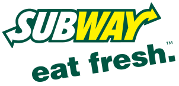
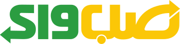

써브웨이 Subway
써브웨이(Subway)는 1965년 미국에서 시작된 서브마린 샌드위치 프랜차이즈이다.
최종 업데이트

써브웨이는 어떤 브랜드인가
써브웨이는 1965년 코네티컷주 브리지포트에서 당시 17세였던 프레드 데루카가 가족의 지인이자 핵물리학자였던 피터 벅 박사의 권유와 자금으로 시작한 미국식 서브머린 샌드위치 프랜차이즈다. 작은 동네 샌드위치 가게로 출발해 가맹 모델을 채택하면서 매장 수 기준 전 세계 최대 외식 체인 가운데 하나로 성장했고, 현재 100여 개국에 약 3만 7천 개 매장을 운영한다.
2024년 4월 사모펀드 운용사 로크캐피털이 약 96억 달러 규모로 인수를 마무리하며 60년 가까이 이어진 창업 가문 중심 체제에서 사모펀드 소유 구조로 전환했다.
써브웨이는 어떻게 봐야 할까
써브웨이의 핵심 차별점은 즉석에서 빵·채소·소스·단백질을 손님이 직접 고르는 커스터마이즈 방식과 '신선한 패스트푸드'라는 포지셔닝이다. 패티를 미리 조리해 규격대로 내놓는 맥도날드 등 햄버거 중심 경쟁자와 달리, 채소를 눈앞에서 얹어 만드는 조립형 경험으로 건강 지향 수요를 흡수했다.
그러나 과도한 가맹 확장이 부메랑이 됐다. 미국 매장은 2015년 2만 7천여 개로 정점을 찍은 뒤 10년 연속 순감소했고, 2024년 631개·2025년 729개가 추가로 문을 닫아 국내 매장은 약 1만 9천여 개로 20년 만의 최저 수준이다.
2023~2024년 로크캐피털 인수는 적정 입지로의 '라이트사이징'과 수익성 재편을 의미하며, 실제 본사 영업이익은 식자재·장비 공급 수익 확대로 개선됐다. 한국에서는 1991년 63빌딩 1호점 이후 매장이 늘었으나, 원부자재·인건비 부담으로 잦은 가격 인상과 매장·배달 가격을 달리하는 이중가격제 도입이 소비자 불만 요인으로 부각됐다.
써브웨이는 어떻게 시작되고 성장했나
출발점은 1965년 여름이다. 대학 등록금을 걱정하던 17세 프레드 데루카가 가족의 지인인 피터 벅 박사에게 조언을 구하자, 벅 박사는 서브머린 샌드위치 가게를 열어 보라며 1천 달러를 건넸다.
두 사람은 코네티컷주 브리지포트에 '피츠 슈퍼 서브머린'을 열었고 첫날 312개를 팔았다. 라디오 광고에서 '피츠 서브머린'이 다른 단어처럼 들린다는 지적이 나오자 '피츠 서브웨이'를 거쳐 1968년 지금의 '써브웨이'로 이름을 줄였다.
직영 확장이 한계에 부딪히자 두 사람은 가맹 모델로 방향을 틀었고, 인근 월링퍼드에 첫 가맹점을 연 뒤 성장이 폭발적으로 빨라졌다. 창업자 데루카가 2015년 세상을 떠나고 공동 창업자 벅 박사도 2021년 별세하면서 가문 중심 경영의 한 시대가 저물었다.
이후 2023년 매각 합의가 이뤄졌고, 2024년 4월 로크캐피털이 인수를 최종 완료하며 약 60년 만에 소유 구조가 사모펀드로 넘어갔다.
써브웨이의 브랜드 아이덴티티는 무엇인가
써브웨이가 내세우는 가치는 신선함과 손님 주도의 선택권이다. 이를 압축한 것이 2016년 '프레시 포워드' 개편 때 다듬어진 워드마크로, 첫 글자 S와 끝 글자 Y에 화살표를 넣어 각각 매장에 들어서는 진입과 만족스럽게 나서는 퇴장을 상징하며 빠른 속도와 전진을 표현한다.
색은 채소와 신선함을 연상시키는 초록과, 따뜻함·활기·시인성을 더하는 노랑을 묶어 붉은색 위주의 경쟁 브랜드와 의도적으로 거리를 뒀다. 타깃은 빠르고 건강한 한 끼를 원하는 활동적인 도시 직장인과 운동 인구이며, 브랜드 보이스는 '신선하게, 당신 방식대로'라는 약속처럼 친근하면서 부담을 주지 않는 어조를 유지한다.
써브웨이의 대표 제품과 서비스는 무엇인가
대표 상품은 30센티미터 풋롱과 15센티미터 샌드위치로, 빵·채소·소스·치즈·단백질을 손님이 직접 골라 조립하는 방식이 핵심이다. 여기에 랩, 샐러드, 단백질 볼 등으로 메뉴를 넓혔다.
미국 기준 15센티미터는 대략 6달러대 후반에서 9달러대, 풋롱은 9달러대에서 15달러대에 형성되며 추가 토핑은 별도다. 2026년에는 5달러 미만 가성비 라인을 처음 선보였다.
채널은 매장 방문과 드라이브스루, 자체 앱·배달앱을 함께 운영한다.
써브웨이는 누가 만들고 이끌었나
창업자: 프레드 델루카와 피터 벅(Fred DeLuca & Peter Buck)이 1965년 시작했다. 소유: 로크 캐피털(Roark Capital, 2024년 4월 인수 완료).
써브웨이는 지금 어떤 상태인가
현재 소유주는 2024년 4월 인수를 완료한 미국 사모펀드 로크캐피털이며, 본사는 플로리다주 마이애미에 있다. 매장은 100여 개국에 약 3만 7천 개 규모이나, 미국 내 매장은 10년 연속 순감소해 약 1만 9천여 개 수준으로 줄었다.
사모펀드 인수 이후의 구체적 재무 수치와 향후 매각·상장 계획 등 세부 사항은 비상장 비공개로 공식 발표되지 않았다.
써브웨이 연혁 — 주요 사건은 언제였나
써브웨이 로고는 어떻게 변해왔나
대표 로고대표 브랜드 마크
BI/CI 아카이브보관 이미지 2
BI/CI 아카이브 4보관 이미지 4자주 묻는 질문
써브웨이는 어느 나라 브랜드인가요?
써브웨이는 미국의 식음료 브랜드입니다.
써브웨이는 언제 설립되었나요?
써브웨이는 1965년 설립되었습니다.
써브웨이의 브랜드 아이덴티티는 무엇인가요?
써브웨이가 내세우는 가치는 신선함과 손님 주도의 선택권이다.
써브웨이의 대표 제품은 무엇인가요?
대표 상품은 30센티미터 풋롱과 15센티미터 샌드위치로, 빵·채소·소스·치즈·단백질을 손님이 직접 골라 조립하는 방식이 핵심이다.
써브웨이는 어느 기업이 소유하고 있나요?
현재 소유주는 2024년 4월 인수를 완료한 미국 사모펀드 로크캐피털이며, 본사는 플로리다주 마이애미에 있다.
써브웨이의 창업자는 누구인가요?
써브웨이의 창업자는 Fred DeLuca, Peter Buck입니다(위키데이터 기준).
써브웨이의 본사는 어디에 있나요?
써브웨이의 본사는 밀퍼드에 있습니다(위키데이터 기준).
출처와 검증
써브웨이 관련 참고: 공식 웹사이트 · 위키데이터 Q244457 · 한국어 위키백과 · 영어 위키백과. 브랜드명은 한글과 원어를 함께 표기하되 데이터에 없는 표기는 만들지 않습니다. 기원 국가·설립연도는 검수된 정의문에서 확인된 값을 우선하고, 없을 때만 공식 웹사이트 URL이 일치하는 위키데이터 개체의 값을 씁니다. 위키데이터 값은 2026-09-07 기준입니다.